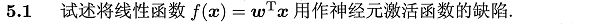
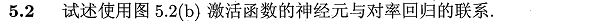
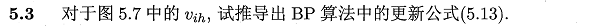
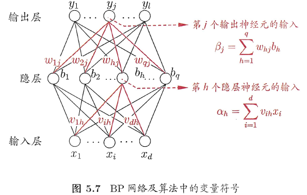
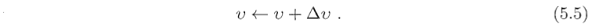
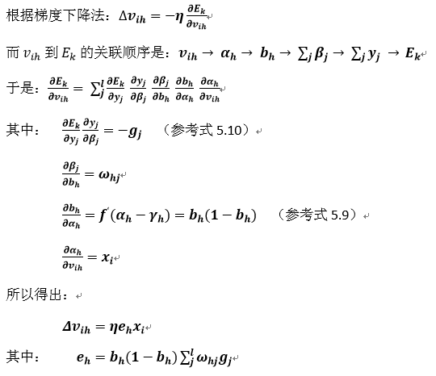
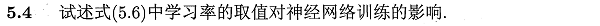
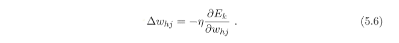
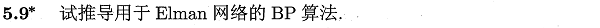

本章所涉及的编程练习采用Python实现，查看相关答案和源代码，欢迎访问我的Github：PY131/Machine-Learning_ZhouZhihua.
本章讲述人工神经网络（Artificial Neural Network，ANN），相关内容包括：
M-P神经元模型，带权的连接，阈值（threshold），激活函数（activation function），Sigmoid函数；
感知机网络，线性可分，隐含层（hidden layer），单隐层网络，多层前馈神经网络（multi-layer feedforward neural networks）；
BP算法，BP网络，梯度下降法，学习率，标准BP算法，累积BP算法，隐层神经元个数调整-试错法（trial-by-error），过拟合问题，早停（early-stopping），正则化（regularization）；
全局最小（global minimum），局部最小（local minimum），多初始化，模拟退火（simulated annealing），随机梯度下降；
RBF网络，径向基函数（RBF），高斯径向基函数；
ART网络，竞争性学习（competitive learning），比较层，识别层，模式类，识别阈值，可塑性-稳定性窘境，增量学习；
SOM网络，高维到低维映射，最佳匹配单元，距离；
级联相关网络（cascade-correlation），结构自适应，相关性；
Elman网络，递归神经网络，状态反馈，推广BP算法；
Boltzmann机，基于能量（energy）的模型，能量最小化，布尔型神经元，受限Boltzmann机（RBM），对比散度（contrastive divergence）；
多隐层，无监督逐层训练（unsupervised layer-wise training），预训练-微调，深度信念网络（DBN），权共享（weight sharing），卷积神经网络（CNN），特征学习（feature learning），特征工程（feature engineering）；
人工神经网络的好处很多，这里不做赘述，下面列出一些在使用神经网络方法时，需要注意的问题：
算法收敛速度问题
过拟合风险
局部最优风险
网络结构选择问题
样本依赖问题
黑盒模型缺陷

激活函数的选取是很灵活的，不同层可选择不同的激活函数，但一般都会要求满足非线性。若为线性（即形如题中 f(x)=wx ），根据多项式组合法则，多层网络退化成等价的单层网络，此时模型成为线性模型，无法解决非线性问题，如线性不可分的分类问题。
进一步，激活函数一般会追求以下性质：
最常用的激活函数有：Sigmoid（对数几率函数），Tanh（双曲正切函数），ReLUs（修正线性函数），RBF（径向基函数），softmax（归一化指数函数）...

图5.2(b)采用Sigmoid函数作为激活函数，相当于将每个节点视为对率回归分类器，其系数为输入连接的权值ω（包括阈值对应的哑变量-1系数θ）；

图如下所示：

参数 vih 的更新公式为（书公式5.5）：

其中 Δvih 如下（书上公式5.13）：
给出具体的推导过程如下：

 
学习率 η 控制着梯度下降法的搜索步长（相关内容可参考书p408-附录B.4的梯度下降法的内容）：
对于固定的 η，参考书p109页： η 过大，收敛过程易振荡， η 过小，收敛速度过慢。
常把学习率 η 设置为随迭代次数变化的量，使其随着训练的要求变化而变化（一般是减小）。如刚开始 η 大以快速到达到目标值附近， 后期 η 小以保证收敛稳定。
参考书p105，标准BP算法和累积BP算法的最大区别在于梯度下降法的实现，前者采用随机梯度下降法原理，后者采用标准梯度下降法，相关可参考题3.3对率回归中的两种梯度下降法的实现。
编程采用python-pybrain实现。本题的详细过程见：
周志华《机器学习》课后习题解答系列（六）：Ch5.5 - BP算法实现
这里采用“添加动量项+自适应学习率”机制来加快BP算法收敛。详细过程见：
周志华《机器学习》课后习题解答系列（六）：Ch5.6 - BP算法改进
详细过程见：
周志华《机器学习》课后习题解答系列（六）：Ch5.7 - RBF网络实验
详细过程见：
周志华《机器学习》课后习题解答系列（六）：Ch5.8 - SOM网络实验

这里简单说说思路：
Elman神经网络是一种递归神经网络（RNN），它将上一次隐层输出和当前输入一起作为隐层输入（反馈feedback），从而实现网络的“记忆”功能。
Elman训练算法以MLP-BP算法为基础，但是在计算隐层梯度时，要考虑由于反馈而产生的时序项，所以在训练算法中存在累加项。更多内容可以参考RECURRENT NEURAL NETWORKS TUTORIAL。
递归神经网络正广泛应用于自然语言处理（NLP）等新兴领域。
本章最后一题，详细过程见：
周志华《机器学习》课后习题解答系列（六）：Ch5.10 - 卷积神经网络实验